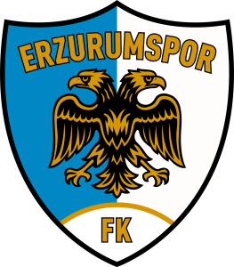

Erzurumspor FK

Erzurumspor FK, Sporun başkenti olan Erzurum’da 24 Mart 1972 yılında kurulan Erzurum Büyükşehir Belediyespor, Erzurum Büyükşehir Belediye Başkanı Mehmet Sekmen tarafından ismi Büyükşehir Belediye Erzurumspor olarak değiştirilmiştir. Amatör ruhtan profesyonelliğe Başkan Mehmet Sekmen ile ulaşan takımımız, 3 yıl gibi kısa bir sürede 3. Lig’den Süper Lig’e yükselmiştir. Mavi Beyazlı kulübümüz Türkiye’de en büyük taraftar kitlesine sahip Anadolu takımlarından biridir.
Kazım Karabekir Stadyumu
Erzurumspor, maçlarını yaklaşık 21.374 kapasiteli tarihi ve yüksek rakımlı Kazım Karabekir Stadyumu'nda oynamaktadır.
İsim Geçmişi
| Takım İsmi | Yıllar |
|---|---|
| Erzurum Büyükşehir Belediyespor | 2005-2014 |
| Büyükşehir Belediye Erzurumspor | 2014-2022 |
| Erzurumspor Futbol Kulübü | 2022-Günümüz |